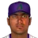
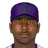
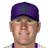

Major League Baseball · Depth chart & lineups
Arizona Diamondbacks
← Team page · Payroll · Transactions
Based on games played and started through May 13, 2002. The OOTP export has no saved depth chart or lineup card, so this is derived from real usage. Lineups and depth chart list only players on the active roster now (26 players).
Most common lineups
For each batting-order spot, the active player who started there most often against that kind of starter (each player used once). Starts in spot = games he started in that spot out of the games against that hand. AVG/OBP/SLG: his season line with this club.
vs. right-handed starters 34 games
| # | Player | Pos | Starts in spot | AVG | OBP | SLG |
|---|---|---|---|---|---|---|
| 1 | 1B | 23 of 34 | .226 | .328 | .394 | |
| 2 | RF | 30 of 34 | .272 | .341 | .397 | |
| 3 | 3B | 29 of 34 | .236 | .371 | .400 | |
| 4 | C | 24 of 34 | .271 | .331 | .481 | |
| 5 | LF | 21 of 34 | .265 | .331 | .450 | |
| 6 | CF | 21 of 34 | .223 | .264 | .392 | |
| 7 | 2B | 17 of 34 | .235 | .295 | .294 | |
| 8 | SS | 13 of 34 | .198 | .293 | .297 | |
| 9 |  Raul Gonzalez | CF | 21 of 34 | .345 | .392 | .482 |
vs. left-handed starters 7 games
| # | Player | Pos | Starts in spot | AVG | OBP | SLG |
|---|---|---|---|---|---|---|
| 1 | LF | 3 of 7 | .265 | .331 | .450 | |
| 2 | RF | 6 of 7 | .272 | .341 | .397 | |
| 3 | C | 4 of 7 | .271 | .331 | .481 | |
| 4 | 3B | 6 of 7 | .236 | .371 | .400 | |
| 5 | 1B | 4 of 7 | .226 | .328 | .394 | |
| 6 | CF | 6 of 7 | .223 | .264 | .392 | |
| 7 | DH | 3 of 7 | .233 | .337 | .315 | |
| 8 | 2B | 3 of 7 | .235 | .295 | .294 | |
| 9 | Raul Gonzalez | CF | 3 of 7 | .345 | .392 | .482 |
Depth chart games started by position through May 13
| Pos | Role | Player | GS at pos | G | AVG | OBP | SLG | HR |
|---|---|---|---|---|---|---|---|---|
| C | Starter | 32 | 34 | .271 | .331 | .481 | 6 | |
| Backup 1 | 9 | 21 | .233 | .337 | .315 | 0 | ||
| 1B | Starter | 39 | 40 | .226 | .328 | .394 | 6 | |
| Backup 1 | 1 | 12 | .343 | .395 | .743 | 3 | ||
| Backup 2 | 1 | 1 | .250 | .250 | .250 | 0 | ||
| 2B | Starter | 23 | 38 | .235 | .295 | .294 | 1 | |
| Backup 1 | 12 | 38 | .223 | .264 | .392 | 6 | ||
| Backup 2 | 6 | 40 | .272 | .341 | .397 | 4 | ||
| 3B | Starter | 37 | 39 | .236 | .371 | .400 | 5 | |
| Backup 1 | 2 | 38 | .235 | .295 | .294 | 1 | ||
| Backup 2 | 2 | 38 | .223 | .264 | .392 | 6 | ||
| SS | Starter | 28 | 30 | .198 | .293 | .297 | 2 | |
| Backup 1 | 13 | 38 | .235 | .295 | .294 | 1 | ||
| LF | Starter | 33 | 38 | .265 | .331 | .450 | 6 | |
| Backup 1 | Raul Gonzalez | 3 | 40 | .345 | .392 | .482 | 4 | |
| Backup 2 | 2 | 40 | .272 | .341 | .397 | 4 | ||
| Backup 3 | 2 | 7 | .174 | .240 | .217 | 0 | ||
| CF | Starter | 19 | 38 | .223 | .264 | .392 | 6 | |
| Backup 1 | Raul Gonzalez | 19 | 40 | .345 | .392 | .482 | 4 | |
| Backup 2 | 2 | 38 | .265 | .331 | .450 | 6 | ||
| Backup 3 | 1 | 30 | .198 | .293 | .297 | 2 | ||
| RF | Starter | 30 | 40 | .272 | .341 | .397 | 4 | |
| Backup 1 | 4 | 12 | .343 | .395 | .743 | 3 | ||
| Backup 2 | 3 | 38 | .265 | .331 | .450 | 6 | ||
| Backup 3 | Raul Gonzalez | 3 | 40 | .345 | .392 | .482 | 4 | |
| DH | Starter | Raul Gonzalez | 15 | 40 | .345 | .392 | .482 | 4 |
| Backup 1 | 12 | 21 | .233 | .337 | .315 | 0 | ||
| Backup 2 | 5 | 38 | .223 | .264 | .392 | 6 | ||
| Backup 3 | 4 | 12 | .343 | .395 | .743 | 3 |
Rotation OOTP projected starters (projected_starting_pitchers.csv)
| # | Pitcher | Active | GS | W-L | IP | ERA | WHIP | K |
|---|---|---|---|---|---|---|---|---|
| 1 | Yes | 6 | 2-3 | 35.1 | 4.33 | 1.25 | 28 | |
| 2 |  Tom Gordon | Yes | 9 | 3-5 | 61.1 | 3.52 | 1.04 | 65 |
| 3 | Yes | 8 | 2-6 | 52.1 | 4.64 | 1.28 | 38 | |
| 4 | Yes | 9 | 4-3 | 59.1 | 3.94 | 1.23 | 56 | |
| 5 | Yes | 9 | 2-3 | 54.0 | 6.17 | 1.52 | 46 |
Bullpen roles from usage: closer = most saves, setup = most holds, long relief = most innings per outing (1.1+ IP)
| Role | Pitcher | Throws | G | SV | HLD | IP | IP/G | ERA | K |
|---|---|---|---|---|---|---|---|---|---|
| Closer | RHP | 13 | 4 | 2 | 14.2 | 1.1 | 1.84 | 8 | |
| Setup | RHP | 11 | 0 | 1 | 12.0 | 1.1 | 3.75 | 10 | |
| Setup | LHP | 6 | 1 | 1 | 5.0 | 0.8 | 1.80 | 5 | |
| Long relief | RHP | 9 | 0 | 0 | 16.0 | 1.8 | 4.50 | 11 | |
| Middle relief | RHP | 14 | 0 | 0 | 20.1 | 1.5 | 2.66 | 22 | |
| Middle relief | RHP | 14 | 1 | 1 | 20.0 | 1.4 | 5.40 | 19 | |
| Middle relief | LHP | 11 | 0 | 0 | 4.2 | 0.4 | 11.57 | 7 |
Bench active position players outside the regular lineups
| Player | Pos | G | PA | AVG | OBP | SLG |
|---|---|---|---|---|---|---|
| RF | 12 | 38 | .343 | .395 | .743 | |
| 3B | 7 | 25 | .174 | .240 | .217 | |
 John Barnes | LF | 6 | 14 | .214 | .214 | .357 |
| RF | 1 | 4 | .250 | .250 | .250 |
Injured list
| Player | Pos | List | Days left |
|---|---|---|---|
| RP | 60-day | 165 |